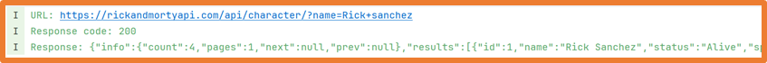
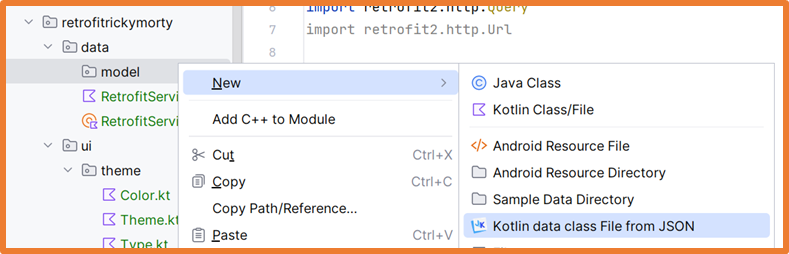
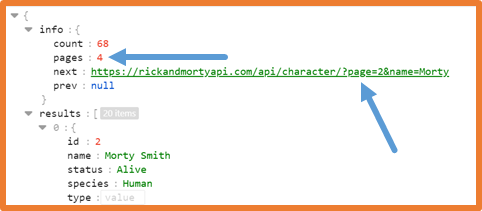

In the previous unit, we studied how to store and access information on the device itself.
In this unit, we will study the different techniques for accessing information available on the internet via REST APIs.
We will learn the techniques to obtain and send information to/from existing APIs.
Service-Oriented Architecture
Service-Oriented Architecture → SOA (Service Oriented Architecture)
Web services are a set of protocols and standards that allow different applications to exchange data.
One of the main features is that these applications can be developed with different programming languages
and can be running on different platforms.
They can even be developed by different entities.
When using a service-oriented architecture, the development of applications is not based on generating complete applications.
With SOA, services (applications) are developed that generate results and
these services can be used both in the own application and in third-party applications.
Standards Used in SOA
For the implementation of services, different technologies can be used depending on the characteristics of the service being developed.
Some of the most used ones are:
HTML: HyperText Markup Language
XML: eXtensible Markup Language
JSON: JavaScript Object Notation
SOAP: Simple Object Access Protocol
WSDL: Web Services Description Language
REST: Representational State Transfer
REST API
API (Application Programming Interface)
An API is a set of functionalities already developed
and prepared to be used within other technologies by making use of SOA principles.
Its purpose is to offer an abstraction layer when performing different tasks
(calculations, obtaining/saving data…) so that it facilitates tasks for developers.
REST
REST → REpresentational State Transfer
It is an architecture based on HTTP requests
to work with web application data (stored in the database) through well-defined operations:
GET: retrieve one or more records from a table.
POST: store a new record in a table.
PUT: change all fields of a record in a table.
PATCH: change a field of a record in a table.
DELETE: delete a record from a table.
REST API
REST API is a web service implementation where the primary technologies used are
REST and JSON for data access.
To develop REST API web services, you must:
Define the URLs (friendly) accepted by the REST API.
Define the request type accepted for each URL.
Create scripts that handle requests to the defined URLs and generate the resulting data.
Each "URL-request type" is known as an endpoint.
Currently, many companies offer their APIs for integrating their data and functionalities into any application.
News from February 2023
There are countless public APIs, some require registration:
In a previous unit we studied the use of the Coil library for accessing images located on the internet.
The Coil library requires a URL to retrieve the image. This URL can either be a direct path to an image
or an API endpoint as shown in the examples:
Internet Connection
It is important to note that if the application is going to access the internet, permissions must be granted by specifying it in the manifest file
manifest → AndroidManifest.xml
with the following line:
Android provides the HttpURLConnection class for making HTTP connections manually.
Connections with HttpURLConnection should be made in a coroutine off the main thread.
Requests of any type allowed by the HTTP protocol can be made.
The following code performs a GET request in Jetpack Compose.
Column(
horizontalAlignment = Alignment.CenterHorizontally,
verticalArrangement = Arrangement.Top,
modifier = Modifier.fillMaxWidth().padding(4.dp)
) {
// Variables to maintain the state
var searchedCharacter by rememberSaveable { mutableStateOf("") }
var responseJSON by rememberSaveable { mutableStateOf("") }
val coroutineScope = rememberCoroutineScope()
// Row for the search bar
Row(
verticalAlignment = Alignment.CenterVertically
) {
OutlinedTextField(
value = searchedCharacter,
onValueChange = { searchedCharacter = it },
modifier = Modifier.weight(1.5f)
)
}
// Search Button
Button(
onClick = {
coroutineScope.launch(Dispatchers.IO) {
val apiURL = "https://rickandmortyapi.com/api/character/"
val regParam = "name=${URLEncoder.encode(searchedCharacter, "UTF-8")}"
val endpoint = URL("$apiURL?$regParam")
with(endpoint.openConnection() as HttpURLConnection) {
requestMethod = "GET"
Log.i("INFO", "URL: $url")
Log.i("INFO", "Response code: $responseCode")
val reader = BufferedReader(InputStreamReader(inputStream))
val response = StringBuilder()
var inputLine = reader.readLine()
while (inputLine != null) {
response.append(inputLine)
inputLine = reader.readLine()
}
reader.close()
responseJSON = response.toString()
Log.i("INFO", "Response: $responseJSON")
}
}
},
modifier = Modifier.weight(0.5f)
) {
Text(text = "Buscar")
}
// Display JSON response
Text(
text = responseJSON,
modifier = Modifier.weight(0.8f).verticalScroll(rememberScrollState())
)
}
Example of running the previous code:

In a real application, data should be parsed to display it in a comprehensible and attractive way to users.
Libraries for HTTP Connections
Although we have previously seen how to use the HttpURLConnection class to make HTTP connections from Android,
there are also several libraries to facilitate and speed up these actions.
Android Libraries:
Retrofit (This is the one we will cover)
Volley
Kotlin Libraries (available in Android and Kotlin projects):
Ktor
http4k
Retrofit
Retrofit is an open-source library for Java and Android that simplifies making HTTP requests and processing the retrieved data.
Features:
Type safety: it ensures safety by automatically converting JSON responses to Java/Kotlin objects and Java/Kotlin objects to JSON in requests.
Readable and maintainable code: thanks to annotations in interfaces, HTTP requests are defined, simplifying their use.
Allows adding parameters, headers, and variables to the endpoint.
data class Response(var info: Info, var results: List<Results>)
data class Info(var count: Int, var pages: Int)
data class Results(var name: String, var image: String)
You can see that it's not necessary to use all the data from the response, Retrofit will take care of selecting only the necessary ones.
The task of creating the necessary Data Classes can be tedious, so you can use the JSON To Kotlin Class plugin
to automatically detect the data structure from the response of an API request.
File → Settings…
Inside the model folder, right-click and select the option
New → Kotlin data class File from JSON.

In the window that opens, you must copy the entire response from the endpoint you want.
If any of the response data will not be used, it can be removed from the generated Data class structure.
With Kotlin data class File from JSON, the property names are directly taken from the JSON response.
Sometimes the names may not be ideal, in which case you can change them using the @SerializedName annotation:
To make using the received data easier, change the property name results
to characters and the Data class name Results to CharacterInfo:
The next step is to create an interface to make the requests.
To do this, create a file named RetrofitService.kt within the data package with the following code:
interface RetrofitService {
// If the value to pass is a parameter: ?parameter=value
@GET("character/")
suspend fun getCharactersByName(
@Query("name") name: String
): APIResponse
// If the value to pass is part of the path
@GET("character/{name}")
suspend fun getCharactersByNamePath(
@Path("name") name: String
): APIResponse
}
In this file, create as many functions as needed for different endpoint requests that will be made in the app.
If the app also uses a local SQLite database, you will have created at least one general DAO
and one specific DAO.
In this case, it's recommended that the RetrofitService.kt file follows the DAO structure.
The app should check the internet connection status to decide whether to make API requests or use the local database.
Also, consider the backup of data in both directions.
To use the previously created interface, you must have an object that returns the Retrofit service.
To do this, create a file named RetrofitServiceFactory.kt inside the data package with the following code:
object RetrofitServiceFactory {
// Function to create the instance of Retrofit
fun getRetrofit(): RetrofitService {
return Retrofit.Builder()
.baseUrl("https://rickandmortyapi.com/api/")
.addConverterFactory(GsonConverterFactory.create())
.build()
.create(RetrofitService::class.java)
}
}
The app will use a ViewModel and LiveData to maintain the data during execution.
In a package named viewmodel, create the file CharacterViewModel with the following code:
class CharacterViewModel() : ViewModel() {
// List of characters
private val _characters = MutableLiveData<List<CharacterInfo>>()
val characters: LiveData<List<CharacterInfo>> = _characters
// Variable to indicate that data is being fetched from the API
private var _isLoading = MutableLiveData<Boolean>(false)
val isLoading: LiveData<Boolean> = _isLoading
// Variable to indicate if an error occurred in the API request
private var _responseError = MutableLiveData<Boolean>(false)
val responseError: LiveData<Boolean> = _responseError
fun loadCharacterList(searchedCharacter: String) {
viewModelScope.launch(Dispatchers.IO) {
_isLoading.postValue( true)
delay(2000) // Delay time to display the ProgressIndicator
val service = RetrofitServiceFactory.getRetrofit()
try {
val searchResults = service.getCharactersByName(searchedCharacter)
_characters.postValue(searchResults.characters)
_responseError.postValue( false)
} catch (e: Exception) {
_responseError.postValue( true)
}
_isLoading.postValue( false)
}
}
}
Finally, here is the code for the main screen in the MainActivity.kt file:
class MainActivity : ComponentActivity() {
override fun onCreate(savedInstanceState: Bundle?) {
super.onCreate(savedInstanceState)
enableEdgeToEdge()
setContent {
RetrofitexampleTheme{
// A surface container using the 'background' color from the theme
Surface(
modifier = Modifier.fillMaxSize(),
color = MaterialTheme.colorScheme.background
) {
Content()
}
}
}
}
}
@Composable
fun Content() {
// ViewModel
val characterViewModel = remember { CharacterViewModel() }
// State variables observed from ViewModel
val characters: List<CharacterInfo> by characterViewModel.characters.observeAsState(initial = emptyList())
val isLoadingBooks: Boolean by characterViewModel.isLoading.observeAsState(initial = false)
val responseError: Boolean by characterViewModel.responseError.observeAsState(initial = false)
// State variable for search input
var searchedCharacter by rememberSaveable { mutableStateOf(value = "") }
// State variable for the list/grid switch
var listViewChecked by rememberSaveable { mutableStateOf(value = false) }
Column(
horizontalAlignment = Alignment.CenterHorizontally,
verticalArrangement = Arrangement.Top,
modifier = Modifier.fillMaxWidth().padding(4.dp)
) {
Image(
painter = painterResource(id = R.drawable.rick),
contentDescription = "Rick & Morty logo",
modifier = Modifier.weight(1f)
)
SearchBox(
searchedCharacter = searchedCharacter,
onValueChange = { searchedCharacter = it },
onClickPress = { characterViewModel.loadCharacterList(searchedCharacter) },
modifier = Modifier.weight(1f)
)
// Box to show loading or fetched information
Box(modifier = Modifier.weight(8f)) {
if (isLoadingBooks) {
LoadingInfo()
} else if (responseError) {
Text(text = "\"$searchedCharacter\" does not match any character")
} else {
if (characters.isNotEmpty()) {
Column {
GridListSwitch(
listViewChecked = listViewChecked,
onValueChange = { listViewChecked = it }
)
if (listViewChecked)
CharactersLazyColumn(characters = characters)
else
CharactersVerticalGrid(characters = characters)
}
}
}
}
}
}
The app developed in the case study can be expanded in the following ways.
If you analyze the JSON response, you can see that the data is not received all at once but is paginated in chunks of 20.
With the variables pages and next, you can know if additional requests are needed to keep getting data.
This way, you can add a button at the end of the character list that, when pressed, loads the next set of results for the character being searched.

Another improvement would be to create a screen to show the full information for each character.
This way, you could make it so that when a character is pressed, the app navigates to that screen and passes all the character's data as a parameter.
If you modified the Data classes to remove unnecessary fields from the response,
on the character information screen, a new request could be made to the API
to get only the information for that character using its endpoint.
In the JSON, you can also see that each character has its own endpoint: